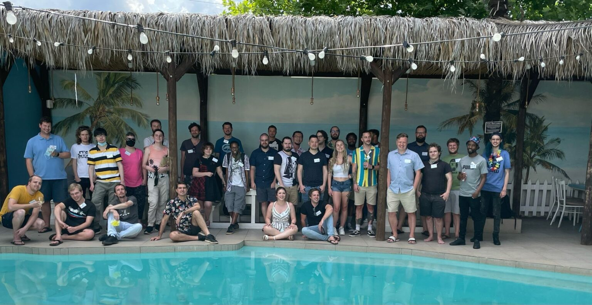

24Bit Games



Engineering critical hits.
Acquired by Annapurna Interactive, this studio focuses on porting games from PC to consoles, optimizing games to reach the best performance possible, and even co-developing games with other studios. Due to this, they have had a hand in producing some of the most interesting games of the 2010s and 2020s, and the most well known "South African" games.
Location: Befordview, Johannesburg
Founded: 2012
Speciality: Bring games to new platforms
Notable works: Cocoon, Neon White, Gorn, Bro Force, Totally Accurate Battle Simulator, Gone Home
Website: 24Bit Games
×
 ❮
❯
❮
❯